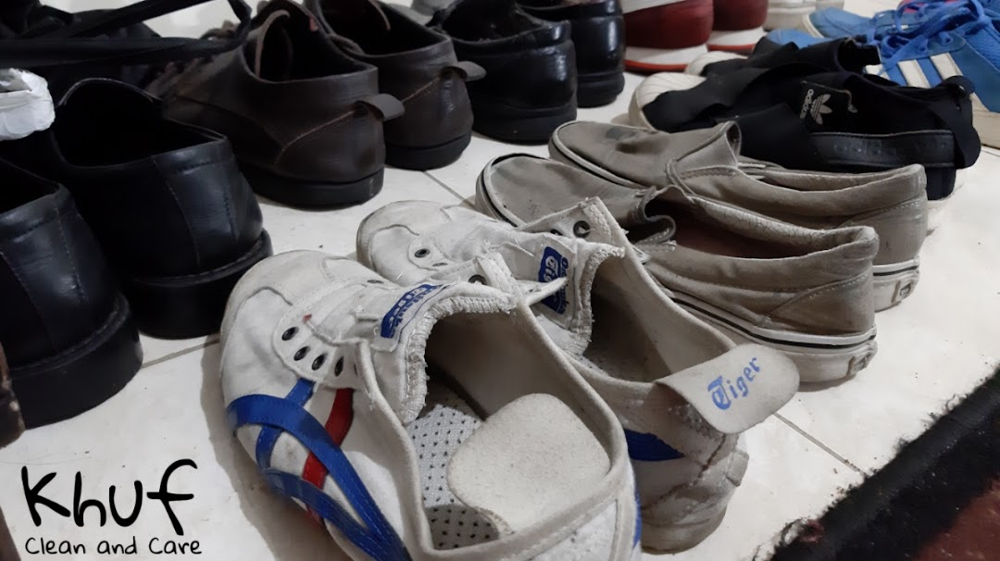

GOOGLE REVIEWS
Ulasan Pelanggan
Review asli pelanggan Khuf yang tersedia secara publik di Google Maps.
4.8
★★★★★
59 ulasan GoogleCleaning, recolor, dan repair yang dikerjakan teliti untuk menjaga sepatu kesayanganmu.
Khuf membantu merawat sepatu, tas, dompet, dan topi melalui pemeriksaan kondisi serta metode yang disesuaikan dengan material.



Rekomendasi treatment setelah pemeriksaan kondisi.
Rekomendasi treatment setelah pemeriksaan kondisi.
Rekomendasi treatment setelah pemeriksaan kondisi.
Rekomendasi treatment setelah pemeriksaan kondisi.
GOOGLE REVIEWS
Review asli pelanggan Khuf yang tersedia secara publik di Google Maps.
Serahin ke kami. Antar-jemput gratis, sepatu pulang kinclong tanpa kamu repot.
CHAT SEKARANG, GRATIS ANTAR JEMPUT